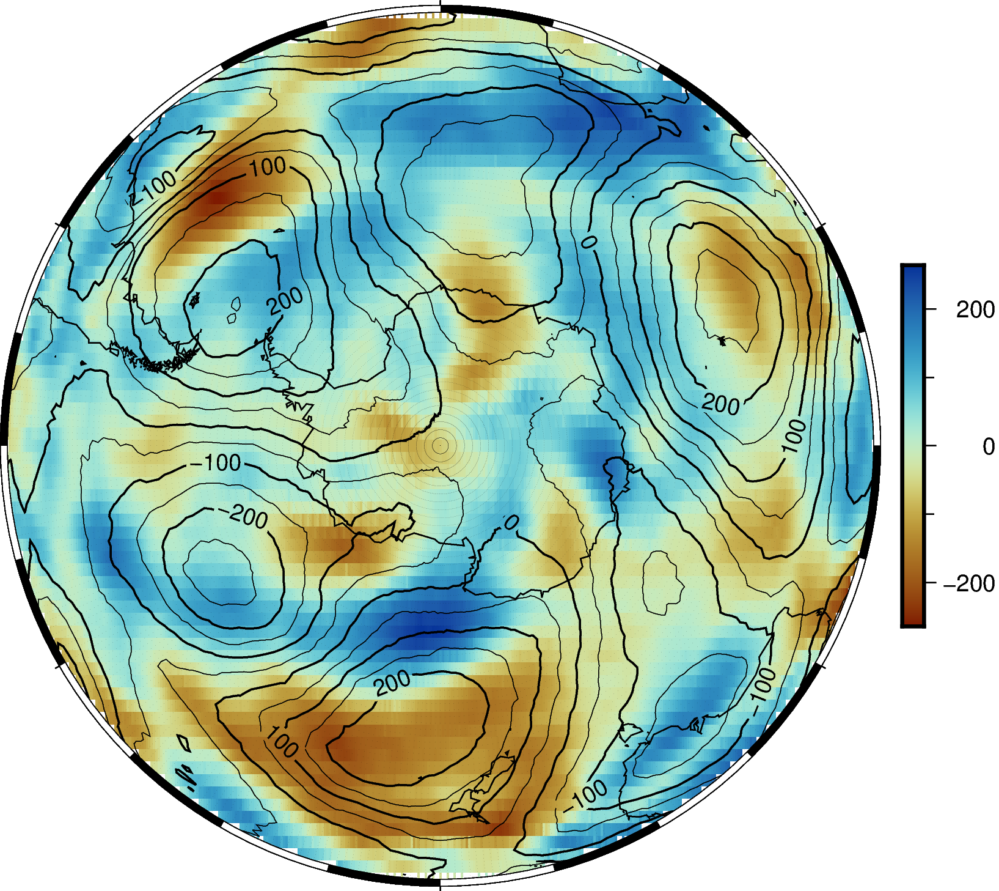
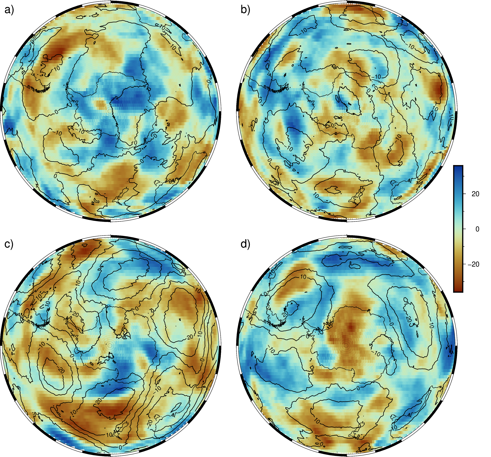

Contents
import numpy as np
import xarray as xr
import pygmt
from pathlib import Path
from fdr_test import fdr_test
def colourbar_scale(da):
abs_max = np.abs(da).max()
return int(np.around(abs_max, -1)) * 1.2
path = Path("C:\\Users\\User\\Documents\\msc-research\\papers\\paper1\\figures\\data\\cov\\")
mean_fname = "mean_zw3_0_60_rank_cov.nc"
var_fname = "variance_zw3_0_60_rank_cov.nc"
var_corr_fname = "variance_zw3_0_60_rank_corr.nc"
ds_mean = xr.open_dataset(path / mean_fname)
ds_var = xr.open_dataset(path / var_fname)
ds_var_corr = xr.open_dataset(path / var_corr_fname)
ds_fdr = fdr_test(ds_var_corr)
significant = ds_fdr.significant.astype('float64').to_dataframe().reset_index()
scale = colourbar_scale(ds_var['cov'])
scale
264.0
fig = pygmt.Figure()
pygmt.config(MAP_FRAME_TYPE="fancy+")
fig.basemap(region="g", projection="G0/-90/70/12c", frame="a")
fig.grdimage(
grid=ds_var['cov'],
cmap="roma",
projection="G0/-90/70/12c",
frame=('f'),
)
fig.grdcontour(
grid=ds_mean['cov'],
# interval=10,
# annotation='10'
)
fig.plot(
x=significant.lon,
y=significant.lat,
size=0.02 * (significant.significant),
style="cc",
color="black",
transparency=50
)
fig.colorbar(
cmap="roma",
position="JMR+o0.4c/0c+w5c/0.3c",
frame=["x+l "],
scale=scale,
)
fig.coast(shorelines="1/0.5p", resolution="c")
fig.show()

def open_datasets(season=None):
if season == None:
mean_fname = "mean_sam_rank_cov.nc"
var_fname = "variance_sam_rank_cov.nc"
var_corr_fname = "variance_sam_rank_corr.nc"
else:
mean_fname = f"{season}_mean_zw3_0_60_rank_cov.nc"
var_fname = f"{season}_variance_zw3_0_60_rank_cov.nc"
var_corr_fname = f"{season}_variance_zw3_0_60_rank_corr.nc"
ds_mean = xr.open_dataset(path / mean_fname)
ds_var = xr.open_dataset(path / var_fname)
ds_var_corr = xr.open_dataset(path / var_corr_fname)
ds_fdr = fdr_test(ds_var_corr)
significant = ds_fdr.significant.astype('float64').to_dataframe().reset_index()
scale = colourbar_scale(ds_var['cov'])
return ds_mean, ds_var, significant, scale
def cov_seasons(fig, season=None):
ds_mean, ds_var, significant, scale = open_datasets(season)
fig.grdimage(
grid=ds_var['cov'],
cmap="roma",
projection="G0/-90/70/12c",
frame=(f'x+l{season}'),
)
fig.grdcontour(
grid=ds_mean['cov'],
interval=10,
annotation='10'
)
fig.plot(
x=significant.lon,
y=significant.lat,
size=0.02 * (significant.significant),
style="cc",
color="black",
transparency=50
)
fig.coast(shorelines="1/0.5p", resolution="c")
return scale
seasons = ['DJF', 'MAM', 'JJA', 'SON']
index = 0
scale = 0
fig = pygmt.Figure()
with fig.subplot(
nrows=2,
ncols=2,
figsize=("25c", "25c"), # width of 15 cm, height of 6 cm
autolabel=True,
margins=["0.3c", "0.2c"], # horizontal 0.3 cm and vertical 0.2 cm margin
frame="a",
):
fig.basemap(region="g", projection="G0/-90/70/12c", frame="a", panel=True)
fig.basemap(region="g", projection="G0/-90/70/12c", frame="a", panel=True)
fig.basemap(region="g", projection="G0/-90/70/12c", frame="a", panel=True)
fig.basemap(region="g", projection="G0/-90/70/12c", frame="a", panel=True)
for season in seasons:
with fig.set_panel(panel=index):
tmp_scale = cov_seasons(fig, season)
if tmp_scale > scale:
scale = tmp_scale
index += 1
fig.colorbar(
cmap="roma",
position="JTR+o0c/-3c+w7c/0.5c",
frame=["x+l "],
scale=scale,
)
fig.show()
